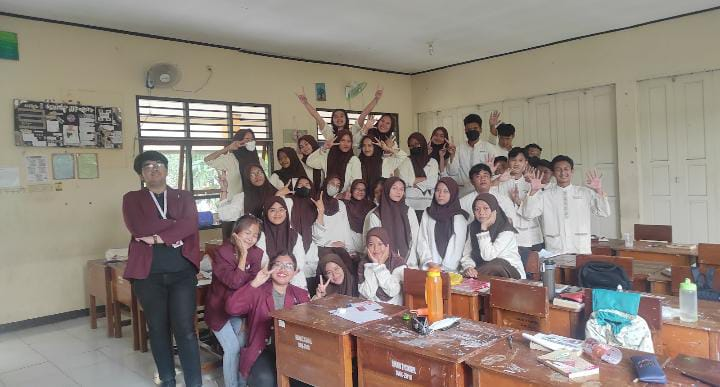

Photo caption: Introducing Telkom University to High School Students (i was the one taking photo).
[WRITER'S NOTE] One of the earliest entries on this record as well as my first ever organization in college: Navy Tel-U, part of PERMISI.TEL-U at Telkom University, during the first months of my undergraduate study.
NAVY's main program was to held roadshows at various high schools, introducing students to Telkom University and provide them with information about the university and its academic opportunities. Before each visit, we tried to coordinate with the school and asked for permission from the authorized teachers. We then visited individual classes and delivered presentations focused at introducing and promoting Telkom University to the students.
Other than that, NAVY also organized various events, such as Edufair competition, Webinar, and even contest of wits.